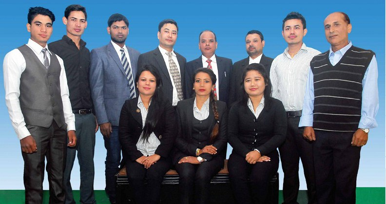

Foreign Employment Licence
Government of Nepal · Department of Labour & Employment PromotionLicence No. 115/055/056, first issued 17 September 1998, authorising GOC to carry out foreign employment business under the Foreign Employment Act.
Right person, right position — for over two decades.
It is with great pleasure that we present our company to you. GOC started its operations on the 17th day of September 1998 — a modest beginning, but with the crystal-clear motive of being a reliable bridge between employers around the globe and the employees seeking foreign employment from the Himalayan country of Nepal.
With more than two decades of impeccable reputation in recruitment, offering the best possible talents from Nepal to the world, it has been a deeply satisfying professional journey with satisfied clientele worldwide.
We never compromise on quality. To ensure it, we follow a simple but stringent methodology, based on the experience and expertise gleaned over the years in HR sourcing. Whether it is an aspiring candidate looking for the right global career, or a multinational conglomerate searching for the right personnel, GOC can always be the right choice.
With profound hope of getting an ample opportunity to work with you, we thank you for your precious time.
— The Board of Directors, Gandaki Overseas Concern Pvt. Ltd.

Human resources are the most important factor of any organization — the factor that mobilizes every other resource toward its goal. Placing the right person in the right position has always been a challenging job, leading organizations to look for the right people beyond any geographical limit.
In 1998, Gandaki Overseas Concern Pvt. Ltd. (GOC) was incorporated with a crystal-clear objective: to become the trustworthy bridge between employers around the globe and the employees available in Nepal. In the same year, GOC acquired its licence, duly approved by the Government of Nepal, to operate the recruitment business.
Over more than two decades in this venture, careful and diligent delivery of service — offered with honesty — has earned the confidence of our clientele. Our ever-growing list of satisfied clients is the testimony on which GOC stands.
At GOC, we never compromise on quality. All candidates are thoroughly assessed and screened, with records, experience and references validated. Our selection policy is based purely on merit, qualification and the ability to perform the task to our clients' satisfaction — and recruiting through GOC ensures the flexibility to meet fluctuating operational requirements.
A level of personal attention unrivalled by many of our competitors — efficient, friendly, honest, and focused on exactly what you need.
We firmly believe every company has different needs, so each recruitment project is treated on an individual basis — with the overall objective of adding value to your business.
Licence No. 115/055/056, first issued 17 September 1998, authorising GOC to carry out foreign employment business under the Foreign Employment Act.
The official permit (इजाजतपत्र) to operate a foreign employment business, with its record of periodic renewals by the department.
Registered as a private limited company, CR No. 9177/055/56.
Quality management system certified for the selection and recruitment of Nepalese human resources for overseas clients.
GOC holds agent entry cards authorising its representative to deal directly with the Saudi consulates on official recruitment and visa work.
Awarded by a client in Kuwait in appreciation of GOC's work in choosing and nominating manpower for the company.
We view manpower as a bridge to lasting relationships. Every recruitment undertaking is a long-term partnership borne out of trust, professionalism and service satisfaction — and we aim to exceed expectations every time.
To become the most trusted, friendly, honest, efficient and professionally managed recruitment company in the hearts and minds of employers on one hand and employees on the other.
GOC is committed to providing quality service to clients on time, actively managing its operation to ensure continued client satisfaction.